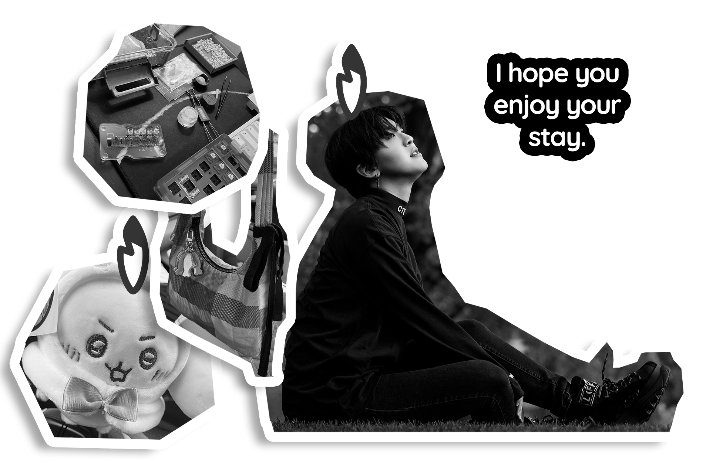

Hobbies and Interests

I have a variety of interests including custom keyboard construction, arcade gaming (particularly rhythm gaming), and illustration! I seem to pick up a new one every single day so enjoy seeing some of my work!
One of my favorite category of movies to watch on YouTube is a genre called "What's in my Bag." I didn't understand the reason at first, until I realized that everyone carries their own unique story in their bag. It could be an attending student, or it could be an office worker who has a 9-5.
- Custom keyboard construction
- Arcade rhythm gaming
- Illustration and drawing
- Collecting artisan keycaps
- Learning new hobbies every day
One of my favorite category of movies to watch on YouTube is a genre called "What's in my Bag." I didn't understand the reason at first, until I realized that everyone carries their own unique story in their bag. It could be an attending student, or it could be an office worker who has a 9-5.